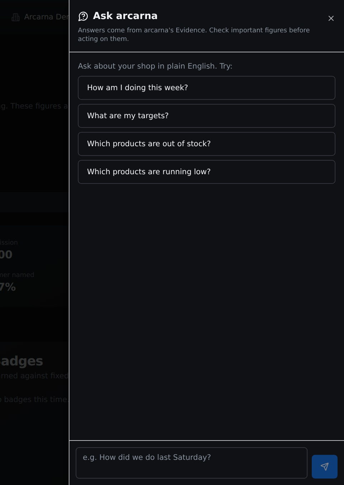
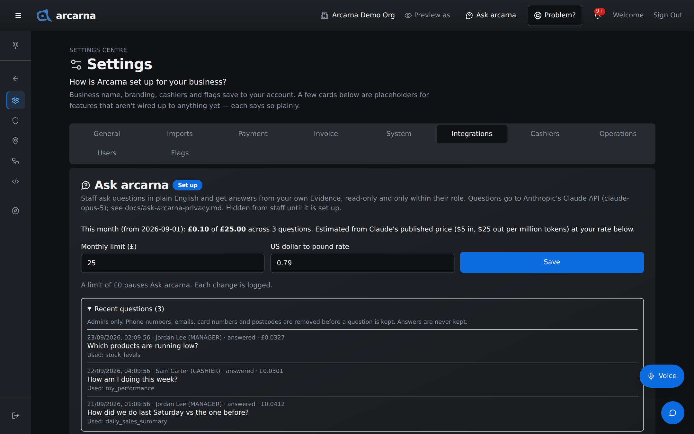

Staff training manual
Staff training manual
Ask arcarna answers questions about the shop's own figures in plain English. This section explains what it can and cannot do, how to ask a good question, how to check an answer, and what to keep out of your questions.
What it is
A question box for the shop's figures
Sometimes the quickest way to a figure is to ask for it. Ask arcarna lets you type a question such as "How am I doing this week?" and get a short answer, written from the shop's own records. It is for everyone: CASHIER MANAGER
Three things hold for every answer:
| Rule | What it means for you |
|---|---|
| Inside your role | It only answers from figures your role can already see on screen. A cashier cannot use it to see cost prices or other people's figures, however the question is put. |
| Read-only | It never changes anything. It cannot take an order, change a price or mark a flag reviewed. Ask it to, and it tells you where in arcarna to do it yourself. |
| It shows its Evidence | Under each answer it links to the pages it read, so you can check the figures. |
The answers are written by an AI model (Anthropic's Claude), working from what arcarna gives it. That is why checking important figures matters, as explained below.
Opening it
Where Ask arcarna opens
- Select the speech-bubble icon in the header, labelled Ask arcarna on wide screens. It is there on every page.
- The Ask arcarna panel slides in from the right, over the page you are on, so you keep your place.
- To close it, select the cross at its top right or tap outside it.
Managers and above can also open it with the Ask arcarna button at the top of Truths at a glance (Section 9).
The first time you visit My performance or Truths at a glance with Ask arcarna set up, a short tour points it out.

Asking
Asking a question
- Pick one of the suggested questions under Try:, or type your own in the box at the bottom. A question can be up to 1,000 characters.
- Press Enter, or select the send button (the paper plane). For a new line without sending, press Shift and Enter.
- While it works, a line shows what it is doing, such as Thinking… or Reading My performance…. The answer then appears as it is written.
- Under the answer, From lists the Evidence it used. Select one to open that page; the panel closes so you can see it.
- Ask a follow-up in the same box, such as "And the week before?". It remembers the last ten questions and answers in this conversation.
Stopping an answer
If you asked the wrong thing, or the answer is taking too long, select the square Stop button where the send button was. The answer ends with Stopped. Closing the panel also stops an answer that is still being written.
Asking good questions
Ask arcarna works best with a clear, single question. A few habits help:
| Do this | Why |
|---|---|
| Say the period. "last Saturday", "this week", "the last 14 days" | Figures always belong to a window. Without one, it has to pick one for you. Trading days start at 06:00, so a late sale after midnight counts to the day before. |
| Ask one thing at a time. | A short question gets a short, checkable answer. Ask the next thing as a follow-up. |
| Name the product as it is on the till. | "Have we got any oat milk?" finds it faster than "that milk". |
| Compare like with like. "last Saturday vs the one before" | A quiet Tuesday should be judged against other Tuesdays, not against a Saturday. |
| Ask about figures, not opinions. | It answers from records. It does not guess, and says so plainly when the figures are not there. |
Who can ask what
What your role can ask about
Each time it looks something up, arcarna checks your role again with the same rules as the page it reads. If you ask about something outside your role, it tells you so and who can see it, and does not try to work it out another way.
| Role | What it can answer from | Try asking |
|---|---|---|
| CASHIER | Your own figures from My performance (including your own commission, and the team median when four or more people worked), the staff targets, and stock levels at your location. | "How am I doing this week?" "What are my targets?" "Which products are out of stock?" |
| MANAGER | All of that, plus the Evidence pages, Staff Performance (cashiers and yourself), Needs a look and Price overrides, for people you outrank. | "How did we do last Saturday vs the one before?" "Which products sold below their minimum price this week?" "Who has the most unreviewed flags in Needs a look?" |
| ADMIN | All of that, for everyone, plus Would have flagged. | "What would the price guard have flagged in the last two weeks?" |
For every role, it never sees customers' phone numbers, email addresses or home addresses. It never sees cost prices, margins or profit when a cashier is asking.
Using an answer
Check the Evidence before you act
Every answer ends with the line Answers come from arcarna's Evidence. Check important figures before acting on them. Take it at its word. Before you act on a figure, for example before you speak to a colleague, reorder stock or tell a customer something, open the Evidence under From and check the figure there. The Evidence page is the record; the answer is a quick summary of it.
When it cannot answer
| You see | What to do |
|---|---|
| You've asked a lot of questions in the last few minutes. Wait a little and try again. | Each person can ask 10 questions in 10 minutes. Wait a few minutes. |
| Ask arcarna is busy right now. Try again in a minute. | Try again shortly. |
| Could not reach Ask arcarna. Check the connection and try again. | Try again in a moment. If it keeps happening, tell an admin with Problem? |
| Ask arcarna could not answer just now. | Often the device has lost its connection. Ask arcarna needs the internet, unlike the till. Check the connection and try again. |
| arcarna could not answer that one. Try asking it another way. | Make the question shorter, or say the period and the thing you want. |
| Ask arcarna has reached this month's spending limit. | The shop's monthly limit is used up. Tell an admin; it resumes next month or when they raise it. |
Privacy
What to keep out of your questions
| What happens | Where it goes |
|---|---|
| Your question | Sent, with your role (never your name or email), to Anthropic's Claude to write the answer. Kept in arcarna for admins and the owner, with your name, after contact and card details are taken out. |
| The answer | Never kept by arcarna. |
| The conversation | Kept only on the device you are using, and gone when the page reloads. |
The staff privacy notice, which your manager can give you, covers Ask arcarna too.
Settings Centre · admins only
Setting up Ask arcarna ADMIN
Ask arcarna is off, and hidden from everyone, until the shop's Anthropic API key is added to the server. Its settings are a card for admins and the owner at Settings Centre › Settings › Integrations, titled Ask arcarna with a Set up or Not set up badge.
Setting it up
- Before setting it up, read docs/ask-arcarna-privacy.md (what is sent to Anthropic and what is kept) and accept Anthropic's Data Processing Addendum for the business.
- Create an API key at console.anthropic.com, under API keys.
- Add the line the card shows, ANTHROPIC_API_KEY=sk-ant-..., to the server's .env file with your key, then restart arcarna. The two optional lines choose the model and how hard it thinks; leave them out unless you have a reason.
- Reload Settings. The badge reads Set up, and the speech-bubble icon appears in everyone's header.
The monthly limit
The card shows this month's estimated spend against the limit, and how many questions were asked. The estimate uses Claude's published price, in US dollars, at your exchange rate.
| Setting | What it does |
|---|---|
| Monthly limit (£) | The most the shop spends in a calendar month. Default £25. Once the month's estimate reaches it, new questions are refused until next month or until you raise it. Set it to £0 to pause Ask arcarna. |
| US dollar to pound rate | The rate used to turn the dollar price into pounds. Default 0.79. Update it now and then so the estimate stays close. |
Change either and select Save. Each change is logged in the admin audit log. The per-person limit of 10 questions in 10 minutes is fixed.
The question log
Fold out Recent questions on the card to see the latest questions: when, who and their role, how it ended (answered, refused, cut short, error or stopped), its estimated cost, the question as kept, and the look-ups it Used. Phone numbers, emails, card numbers and postcodes are removed before a question is kept, and answers are never kept. Use the log to see what staff need, not to judge them.
